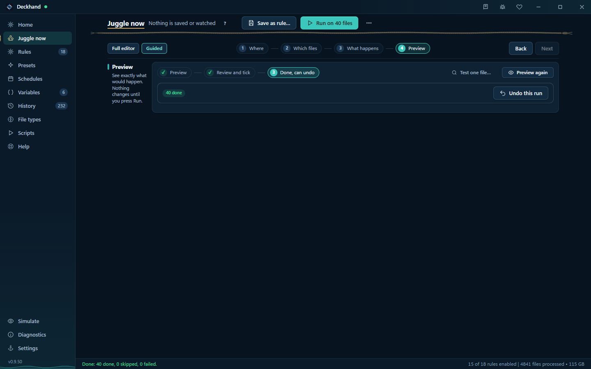
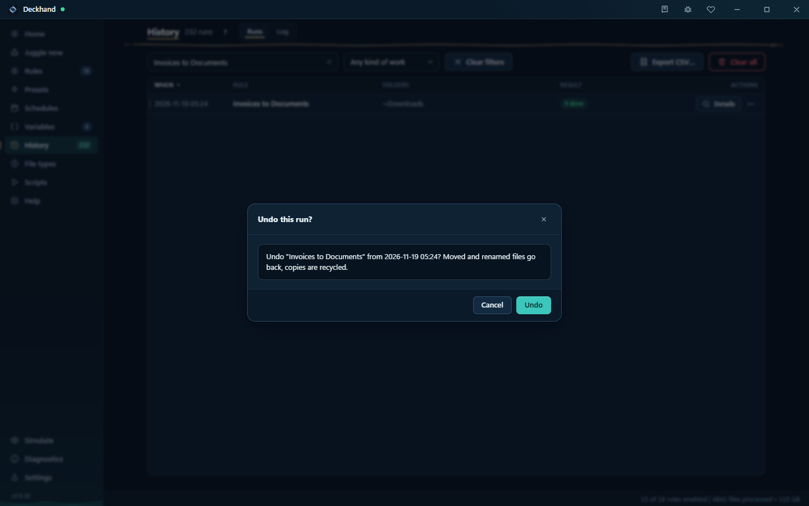

Preview, Run and Undo
See exactly what a rule will do, run it, and put files back.
Preview makes no changes. Run does what you previewed. Undo reverses a run as far as it can.
The first four screenshots follow one job in Juggle now: recycling stale build output (files under a arget folder, older than 21 days) in the Projects folder, and removing the folders that are left empty. The last two belong to the rule Invoices to Documents from Your first rule.
Preview
Press Preview in a rule, in Juggle now, or on Run on a folder for a preset. Deckhand shows what would happen and changes nothing.
| Tab | Shows |
|---|---|
| Changes | Files that would change: file, what it Becomes, and size. |
| Unchanged | Files that are already fine. |
| Problems | Files that would fail. Report by reason groups them. |
| No match | Files the conditions did not select. |
| Excluded | Files your exclusions kept out. |
| Not ready | Files that are still changing, locked or unfinished. |
Preview uses the same code as a real run. The screenshot is the preview of the build clean-up job: 40 files in the Changes tab, each with a tick box, the action it would do under Becomes, and its size, plus a No match tab with 3 files. The button at the top says Run on 40 files, and the status bar says nothing has been touched yet.

Tick what you want
- Untick any file you want left alone for this run.
- Press Exclude... to keep chosen files out for good. See Conditions and exclusions.
- Include files still changing acts on files that are still being written, for this run only. An unfinished
.crdownloadis still never touched.
Right-click a file
View contents shows a file's text, plus details for PDF, Office, audio and pictures, without opening another program. Nothing is changed. Dragging a file out of a list into Explorer copies it there. The original stays.
Stale previews
If you edit the rule after a preview, the preview is stale. Run is disabled until you preview again, so you never run something different from what you reviewed.
Run
Press Run. Deckhand asks you to confirm and says what it will do, as in the next screenshot.

Deckhand then re-checks each ticked file and does what the preview showed. The result card shows how many files are done (40 here) and offers Undo this run.


Run can also be started with Run now on the Schedules page, or from the command line. See Command line.
Undo
Every run is recorded in History with each step.
- Undo this run puts files back where they were, as far as that is still possible. A file you changed since is left alone and reported.
- To undo one file, open the run's Details and press the undo icon on that file.
- Folders a Move or Copy created are removed again when they are empty.
| Can be undone | Cannot be undone |
|---|---|
| Move, copy, rename, sort, zip, extract, recycle | Delete, and anything a run command or script did |
The last two screenshots show undoing the Invoices to Documents run from History. The first is History filtered to that run, with the ... menu of its row open and Undo this run in it.

The second is the question Deckhand asks before it moves the files back.


Recycled files come back from the Recycle Bin. Overwritten files are in the Recycle Bin too.
Problems and left-alone files
The Problems tab lists files that failed (red) or were left alone on purpose (amber), each with the reason. Export CSV saves the list.